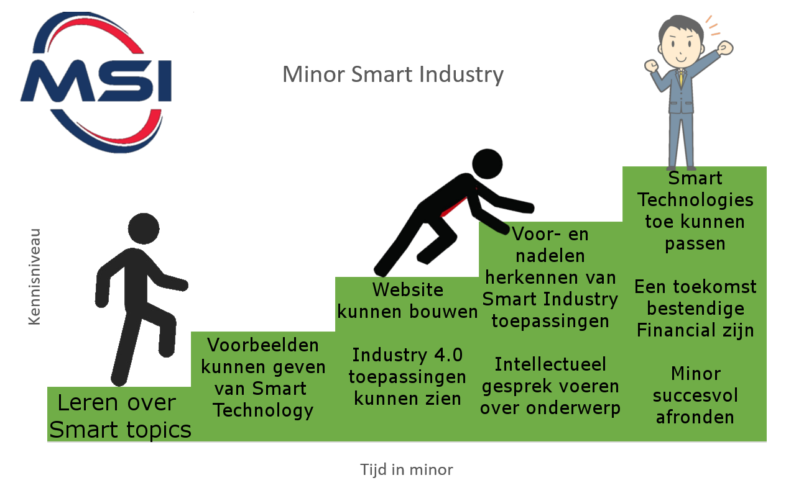

Ik ben Marc Franken, ik ben 26 jaar oud en ik studeer Finance and Control aan de HAN in Nijmegen. Om een betere financial van de toekomst te worden, ben ik de minor Smart Industry gaan volgen.
Nu vraag je je misschien af welke connectie de minor Smart Industry heeft met het worden van een financial van de toekomst.
In internationale termen staat Smart Industry beter bekend als de Industry 4.0, ofwel de vierde vierde industriële revolutie. Deze revolutie stamt voort uit de technologiën als data vergaren en sturen op deze data. Er ontstaat hierdoor een nieuwe ‘slimme’ manier van werken.
Persoonlijk ben ik van mening dat de manier van werken die wij kennen de komende jaren drastisch gaat veranderen, omdat we steeds meer van papier overstappen op een digitale omgeving, waardoor er steeds meer mogelijkheden en kansen ontstaan.
Als toekomstige financial leek het mij dan ook niets meer dan de normaalste zaak dat ik een minor koos dat precies aansluit op deze nieuwe ontwikkelingen.
Ik hoop tijdens deze minor veel in de brede zin van industry 4.0 te leren, of het nou directe toepassingen heeft op mijn toekomstige baan of niet. Maar ik hoop ook op een diepgaande wijze te leren over toepassingen die wél directe invloed hebben op mijn toekomstige baan. Een aantal voorbeelden zijn bijvoorbeeld dat ik meer wil leren over 3d-printen, het gebruik van dashboards en de Internet of things.
De minor is voor mij geslaagd wanneer ik uiteindelijk klaar ben met veel kennis die ik in mijn latere jaren kan toepassen, omdat ik deze minor zie als een kennis springplank voor mijn carrière als financial. In het bijzonder wil ik leren om dashboards te bouwen en ik hoop dat deze minor mij deze mogelijkheid gaat geven.
